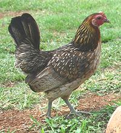
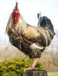
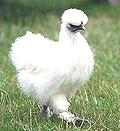

SAFARI
Users
- General and History
- Types, Sizes & Uses
- Parts & Yields - meat, skin, fat, bones.
- Preparing and Cooking Chickens
- Chicken Parts & Products
- Smoked Chicken - Snack, Appetizer or Indgredient.
- Feet
- Giblets - Hearts, Gizzards, Livers
- Rooster Testicles
General & History
 The hundreds of varieties of domestic chickens (Gallus gallus domesticus) were all developed from a single subspecies of Southeast Asian red jungle fowl (Gallus gallus gallus). The first really hard evidence of domesticated chickens is from China about 6000 BCE, but in regions not suitable for red jungle fowl, so they must have been domesticated elsewhere. Evidence now points to Vietnam about 10,000 years ago. Photo of jungle hen by Adamantiaf distributed under license Creative Commons Attribution-ShareAlike v3.0.
Chickens were found not only highly susceptible to domestication but tolerant of various climates - and they eat just about anything. They arrived in Egypt about 1430 BCE from Babylon and entered the Greco-Roman world in about 500 BCE, but are not mentioned in the Hebrew/Christian Old Testament so they probably were not kept in the Levant.
Chickens were brought to North America by Europeans, but are now proven to have been introduced to South America by Polynesians in pre-Columbian times - settling once and for all the question of Polynesians traveling to the Americas (sorry, Thor).
Types, Sizes & Uses
Unlike turkeys, you don't have to chose between hens and toms because they aren't marked. Several sizes of chicken are available on the market to be used in different ways. Growers generally use different varieties for each size, the object being to select varieties that "plump out" (develop thick breast meat) at different ages and weights. From youngest to oldest:
Poussin:
[Coquelet] A really young chicken (less than 28 days) weighing around 1 pound (400 to 500 grams) - enough for one person if there's plenty else to eat. While quite common in Europe they're not to be found in US markets, save perhaps in some specialty shops serving the high priced chef set.Cornish Game Hen:
[Game Hen, Rock Cornish, Cornish] A young chicken (30 to 40 days) of special breed weighing between 1 and 2 pounds (450 to 900 grams). They are very common frozen in US supermarkets, often packed two to a tray. A large one (2 pounds) can serve two persons if there is a side dish, soup or salad. Cornish game hens were developed in Connecticut and are pretty much an American item, as difficult to find in Europe as Poussins are to find here. They were originally a cross between a Cornish cock and a Plymouth Rock hen, and are in no way "game".Fryer / Broiler:
A young chicken killed at 7 to 13 weeks and weighing between 3 and 5 pounds. This is your standard supermarket chicken, sold both fresh and frozen in mass market, boutique and kosher formats. Serves 3 to 4 people.Roasters:
A mature chicken killed at 3 to 5 months and weighing between 4-1/2 and 8 pounds. Often parts are too thick to fry and some consider them less than ideal for roasting as well, but I figure if you can roast a turkey you can probably roast a large chicken. Serves 5 to 7 people.Capon:
A rooster that's had his rocks cut off in childhood so he grows up big and soft and doesn't bother the hens or fight with other capons. They are generally killed at under 8 months when they will weigh 6 to 9 pounds. The meat is tender and considered the finest flavor of all chickens, but the bird will have more fat than others. This is a specialty shop item - I've never seen one in Southern California markets.Stewing Chicken:
Over 10 months old, 5 to 8 pounds and not generally found in the supermarkets. They're often a byproduct of the egg industry - hens beyond their peak laying age.Old Hen / Old Rooster:

Old Hen is a barnyard chicken generally at the end of her egg production. Tasty but tough and should be long cooked in soup or stew. Old Rooster (Photo) is even tougher. It's said you can boil him until the bones dissolve and the meat will still be tough. I've cooked old hen and that was tough enough, thank you. Photo © i0030.Silkie
 A very unusual chicken with fur-like feathers. It is thought some dinosaurs may have had feathers like this. Silkies also have blue-black skin and black bones. They are used mainly by Chinese and Southeast Asian peoples, often to make a tonic soup combined with medicinal herbs and roots. Details and Cooking. Photo © i0031.
Parts & Yields
General Rules
- To replace the meat of a whole chicken with skinless/boneless meat you need a little over half the weight of the whole chicken called for. Use good stock instead of water in the recipe to replace flavors expected from the whole chicken.
- To replace skinless/boneless meat with the meat of a a whole chicken, you need a chicken weighing (after removing giblets) a little less than twice the weight of the meat called for.
- Simmered meat will weigh about 64% of the weight of the raw meat. By poaching (190°F/88°C to 198°F/92°C) and cooling in the broth, you can get as high as 70%.
- For making stock, the fat goes into the pot along with the skin, bones, and off-cuts. Chefs have found much of the flavor we expect from fat is water soluble. Remove the fat from the strained stock using your gravy separator. For details see our Soup Stock / Broth page.
This table below is for a chicken sold packaged as 6.12 pounds (5.8 pounds unpacked). A smaller chicken will not yield as high a percentage of meat. A 3 pound chicken may yield as low as 80% of the table percentage (42% instead of 52%)
Example: To know how much weight in whole chickens you must buy to have 5 pounds of breast meat, use the Whole Chicken table. divide 5 pounds by 0.28 (28%) to find 17.9 pounds of whole chickens. Conversely, to find out how much skinless, boneless breast meat your 5 pound chicken will yield, multiply 5 by 0.28 to get 1.4 pounds (1 pound 6 ounces).
Example: To find how much weight in whole thighs you need to buy to yield 3 pounds of skinless, boneless thigh meat, use the Parts table. Divide 3 pounds by 0.55 (55%) to find 5.45 pounds of whole thighs. Conversely, to find out how much meat a 4.5 pound tray of thighs will yield, multiply 4.5 by 0.55 to get 2.48 pounds.
Whole Chicken
| Part | Whole | Skinless | Meat only | Simmered (Meat only) | Comment |
|---|---|---|---|---|---|
| Whole | 93 oz | 77.6 oz - 83% | 48.4 oz - 52% | 32.4 oz - 35% | |
| Breast, boneless | 29.38 oz - 32% | 26.8 oz - 28% | 26.8 oz - 28% | 18.8 oz - 21% | Tenders 4.3 oz (1) |
| Bone | 4.2 oz | ||||
| Thighs | 17.8 oz - 19% | 15.1 oz - 16% | 11.6 oz - 12% | 5.2 oz - 6% | |
| Drumsticks | 11.4 oz 12% | 10.5 oz - 11% | 7.3 oz - 8% | 4.9 oz - 5% | |
| Wings | 9.8 oz - 11% | ||||
| Drumettes | 4.8 oz - 5% | 4.0 oz - 4% | 2.3 oz - 2.5% | 1.5 oz - 1.6% | First wing joint |
| 2nd joint | 3.3 oz - 4% | ||||
| For Stock | 44.6 oz - 48% | ||||
| Skin & Fat | 18.4 oz | ||||
| Bones, etc. | 26.2oz |
- Chicken Tenders: [Chicken fingers, Chicken fillets, Chicken strips] This is the strip of breast meat found under the main breast meat. We included it in the breast weight, as that's the way it will normally be used in the home.
Parts (tray or bag)
| Raw Meat | Simmered Meat | Skin | Fat | |
|---|---|---|---|---|
| Thighs 5# | 2# 12 oz - 55% | 1# 13oz - 35% | 13 oz - 17% | 7.7 oz - 10% |
| Drumsticks 4# | 2# 6oz - 59% | 1# 8oz - 38% | 5 oz - 8% | 1.8 oz - 3% |
| Drumettes 4# | 1# 15oz - 48% | 1# 4oz - 31% | 11oz - 17% | |
| Leg Quarters 5# | 2# 5 oz - 46% | 1# 4oz - 25% |